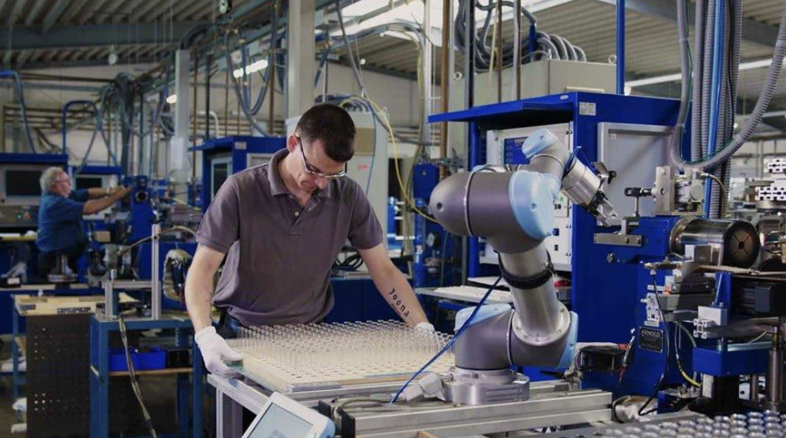
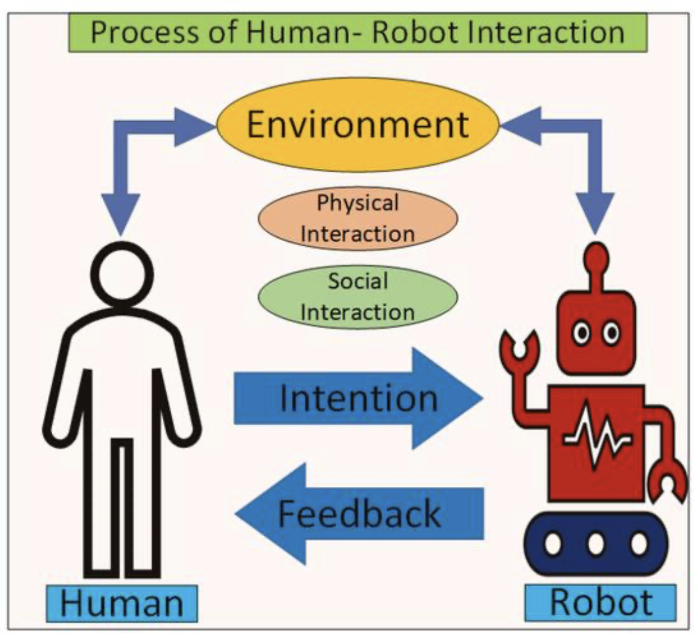
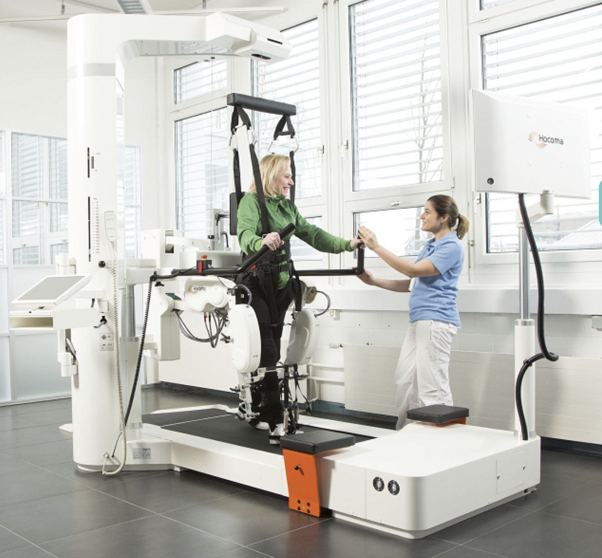

1. Introduction & Definition
Human–Robot Interaction (HRI) is the field that studies how humans and robots communicate, interact and work together. Unlike traditional computer interfaces, where users mainly interact with information displayed on a screen, human–robot interfaces involve machines that can move, manipulate objects and act in the physical world. [1]
The purpose of these interfaces is to make interaction between humans and robots effective, understandable and safe. Depending on the application, a robot may follow human instructions, assist with physical tasks, provide information or collaborate with a person to achieve a shared goal.
Human–robot interaction is an interdisciplinary field involving robotics, artificial intelligence, human-computer interaction, psychology and ergonomics. [1]

2. History & Evolution
The development of human–robot interfaces has followed the evolution of robotics, from machines designed to perform repetitive industrial tasks to robots capable of interacting directly with people.
An important development was the introduction of collaborative robots, commonly called cobots. The term was introduced in 1996 by J. Edward Colgate and Michael Peshkin, who developed the concept of machines designed for direct physical interaction with humans. [3]
Traditional industrial robots generally operated inside protected areas, separated from human workers. Collaborative robots introduced a different approach: robots and humans could share a workspace and cooperate on tasks. [2] [3]
Over time, improvements in sensors, artificial intelligence and robotic control have expanded human–robot interaction into healthcare, education, domestic assistance and other areas.
3. How It Works
Human–robot interfaces allow people and robots to exchange information and coordinate their actions. This communication can happen through different input and feedback methods. [1]
Human Input
A person can communicate instructions through speech, physical interaction, movements or dedicated control devices. The robot receives this information through microphones, cameras, touch sensors or other input systems.
Robot Perception and Interpretation
The robot processes the information collected by its sensors. Depending on its capabilities, it can recognize commands, detect people, interpret movements and determine how to respond. [1]
Action and Feedback
The robot performs an action using its motors and mechanical components. It can also communicate its status through sounds, lights, movements, screens or physical feedback.
For effective collaboration, the robot must be able not only to understand human instructions but also to communicate its intentions and coordinate its actions with the person.

4. Types & Technologies
Human–robot interfaces can use several different communication and interaction methods.
Voice and Speech Interfaces
Speech interfaces allow people to communicate with robots using spoken commands. Speech recognition systems can identify words and instructions, allowing users to control certain robot functions without physical contact.
Gesture-Based Interaction
Cameras and sensors can detect human movements and gestures. This allows a robot to respond to specific movements or use them as instructions.
Haptic Interfaces
Haptic technology allows users to receive information through the sense of touch. It can provide physical feedback, such as pressure or force, during interaction with a robotic system. [4]
This is particularly useful in teleoperation, where a person controls a robot remotely. Force feedback can help the operator understand the physical forces experienced by the robot while performing a task. [4]
Physical and Collaborative Interfaces
Some interfaces allow direct physical interaction between a person and a robot. Collaborative robots can share a workspace with humans and coordinate their movements while performing tasks together. [2] [3]
5. Applications, Impact & Future
Human–robot interfaces are used in several environments where robots assist people or work alongside them. [1]
Applications & Use Cases
Industry and Manufacturing: Collaborative robots can help workers with assembly, manipulation and repetitive operations. Humans can provide flexibility and decision-making, while robots can perform tasks with precision and consistency. [2] [3]
Healthcare and Rehabilitation: Robots can assist healthcare professionals and patients. Rehabilitation robots can support people recovering hand and finger movements after a stroke or other neurological impairments. Exoskeleton systems can also interact directly with the human body. [7]
Elder Care and Assistance: Nursing and companion robots can support older people with daily activities and provide opportunities for interaction. They can assist with physical tasks and offer social interaction, although they do not necessarily replace human caregivers. [5]
Education: Educational robots can act as tutors or learning partners. They can provide instructions, information and individual attention to students, or allow students to learn by teaching a robotic system. [5]
Search and Rescue: Unmanned aerial vehicles and underwater robots can support search and rescue operations. They allow human operators to explore dangerous or difficult-to-access environments and collect information that can help locate missing people.
Space Exploration: Robots can assist astronauts during space exploration missions. Rovers and other robotic systems can support operations in environments where direct human intervention is difficult or dangerous.
Real-World Examples
Collaborative Robots (Cobots): Cobots are designed for direct and close-range interaction with humans. Unlike many traditional industrial robots, they can be designed to share workspaces with people. Their safety can rely on lightweight construction, rounded edges, limits on speed and force, and sensors or software that help prevent unsafe movements. [2] [3]
PARO – Therapeutic Robot: PARO is a therapeutic robot designed for use in hospitals and nursing homes. It is an example of a social robot intended to interact with people in healthcare environments. [5]
Pepper – Social Robot: Pepper is a humanoid robot used in research and care environments. It has been studied as a system for interacting with residents in care homes and supporting activities involving people. [5]
Teleoperated Robotic Systems: Teleoperation allows a human operator to control a robot from a distance. Haptic feedback can provide information about the forces involved in the robot's actions, helping the operator perform tasks remotely. [8] [4]

Advantages
Human–robot interfaces offer several advantages:
- Improved productivity: Humans and robots can combine their different capabilities to complete tasks.
- Precision and consistency: Robots can perform repetitive operations with a high degree of consistency.
- Safety: Robots can assist with dangerous or physically demanding tasks, reducing the need for direct human exposure.
- Accessibility and assistance: Robots can support people with physical limitations and assist healthcare professionals.
- Flexibility: Different interaction methods allow robots to be used in industrial, medical, educational and domestic environments.
Disadvantages
However, they also present some limitations:
- Safety risks: Robots can cause injuries if their movements are not properly controlled, especially when they handle heavy objects or dangerous tools.
- Technical complexity: Reliable interaction requires sensors, software and control systems capable of interpreting human actions.
- Dependence on technology: Some systems may require specialized equipment, maintenance and technical support.
- Communication limitations: Robots may misunderstand instructions or fail to correctly interpret human behaviour.
- Human factors: Effective collaboration requires consideration of ergonomics, trust and the way people respond to robotic systems.
Ethical & Social Impact
As robots become more present in workplaces, healthcare and everyday environments, their interaction with humans raises important social and ethical questions. [1]
Safety and Responsibility: Systems must be designed to prevent dangerous interactions. It is also important to determine responsibility when a robot causes an accident or makes an incorrect decision.
Employment: The use of robots in manufacturing and other industries can change the tasks performed by workers. Robots may take over repetitive or dangerous activities, while humans may focus on supervision, decision-making and more complex tasks.
Privacy: Robots equipped with cameras, microphones and other sensors may collect information about the people and environments around them. This raises questions about how personal information is collected and used.
Human Relationships: Social and companion robots can provide interaction and assistance, but their role in care and social environments raises questions about the relationship between human contact and automated systems. [5]
Future Developments & Conclusion
Human–robot interaction is expected to continue developing as robotics, artificial intelligence and sensing technologies improve.
Future systems may become better at interpreting human intentions, adapting to individual users and coordinating actions in shared environments. Improvements in collaborative control, perception and communication could make interaction more natural and efficient.
Human–robot interfaces represent an important step in the evolution of human–machine interaction. Instead of simply displaying information or processing commands, computers can now interact with people through physical machines that move and act in the real world.
The main challenge is to develop robots that can work effectively alongside humans while remaining safe, understandable and useful.
Sources (APA Style)
- Wikipedia contributors. (n.d.). Human–robot interaction. Wikipedia. https://en.wikipedia.org/wiki/Human–robot_interaction. Article Link
- Wikipedia contributors. (n.d.). Human–robot collaboration. Wikipedia. https://en.wikipedia.org/wiki/Human–robot_collaboration. Article Link
- Wikipedia contributors. (n.d.). Cobot. Wikipedia. https://en.wikipedia.org/wiki/Cobot. Article Link
- Wikipedia contributors. (n.d.). Haptic technology. Wikipedia. https://en.wikipedia.org/wiki/Haptic_technology. Article Link
- Wikipedia contributors. (n.d.). Social robot. Wikipedia. https://en.wikipedia.org/wiki/Social_robot. Article Link
- Wikipedia contributors. (n.d.). Human–computer interaction. Wikipedia. https://en.wikipedia.org/wiki/Human–computer_interaction. Article Link
- Wikipedia contributors. (n.d.). Rehabilitation robotics. Wikipedia. https://en.wikipedia.org/wiki/Rehabilitation_robotics. Article Link
- Wikipedia contributors. (n.d.). Teleoperation. Wikipedia. https://en.wikipedia.org/wiki/Teleoperation. Article Link